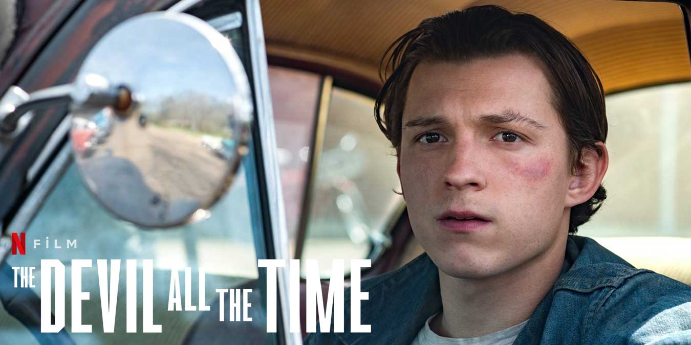
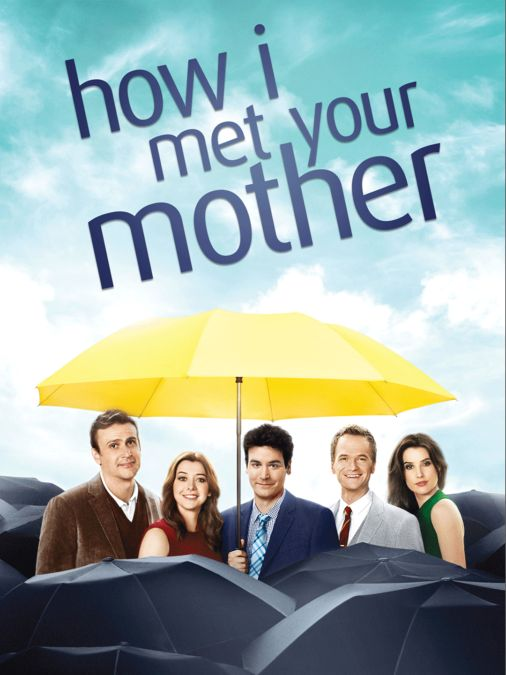
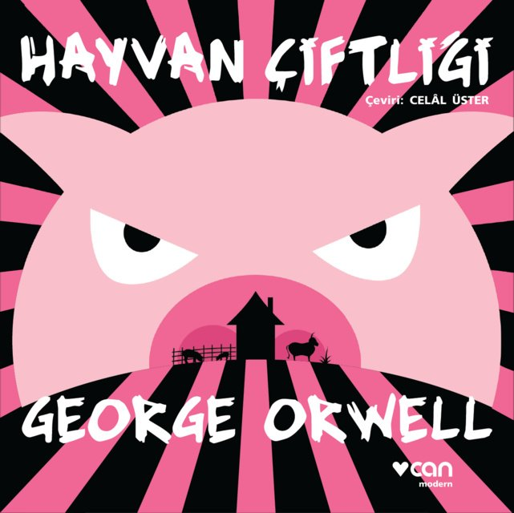

Berkant Çınaroğlu
Hakkımda
Merhaba! Ben Berkant Çınaroğlu. İstanbul'da yaşıyorum.
İlgi Alanlarım
- Film
- Dizi
- Kitap
Sevdiğim Filmler
The Devil All The Time

The Devil All the Time, Donald Ray Pollock'un aynı adlı romanından uyarlanan yeni bir Amerikan psikolojik gerilim filmi.
Knockemstiff, Ohio ve komşu ormanlarında, kötü karakterler - kötü bir vaiz (Robert Pattinson), sapkın bir çift (Jason Clarke ve Riley Keough) ve sahtekar bir şerif (Sebastian Stan), - kendisini ve ailesini tehdit eden şeytani güçlerle savaşırken genç Arvin Russell'ın (Tom Holland) etrafında buluşur.
The Shawshank Redemption

Esaretin Bedeli (İngilizce: The Shawshank Redemption), Frank Darabont'un senaryosunu yazdığı ve yönettiği, başrollerinde Tim Robbins ve Morgan Freeman'ın yer aldığı 1994 yapımı Amerikan dram filmidir.
Stephen King'in Rita Hayworth ve Shawshank'in Kefareti adlı novellasından uyarlanan film, masumiyetini iddia etmesine rağmen karısını ve sevgilisini öldürdüğü gerekçesiyle Shawshank Devlet Cezaevi'nde yaklaşık 20 yılını geçiren bankacı Andy Dufresne'in hikâyesini anlatır. Cezaevinde kaldığı süre boyunca diğer mahkûmlardan Ellis Boyd "Red" Redding ile arkadaşlık kuran Dufresne, cezaevi müdürünün para aklama faaliyetlerine yardım etmeye başladıktan sonra gardiyanlar tarafından korunmaya başlanır.
The Green Mile

Yeşil Yol (Orijinal adı: The Green Mile), 1999 yılında çekilen ABD yapımı bir dram filmidir. Yönetmeni ve senaristi Frank Darabont'tur. Film, Amerikalı ünlü bilimkurgu yazarı Stephen King'in aynı adlı romanından uyarlanmıştır.
Oldukça iri bir adam olan John Coffey, iki küçük kızı tecavüz ederek öldürmek suçundan idama mahkûm olmuştur. Ürkütücü görünümünün aksine oldukça ince ve karmaşık bir iç dünyası olan John Coffey, bazı doğaüstü güçlere sahiptir. İdam cezası alan mahkûmların bulunduğu hapishanenin infaz odası baş gardiyanı olan Paul Edgecomb'un ona gerçekten suçlu olup olmadığını sorması ile birlikte ikisinin arasında bir diyalog başlar.
Bazı ürolojik sorunlardan ötürü hasta olan Paul'un, John Coffey'nin güçleri sayesinde iyileşmesiyle olaylar gelişmeye başlar. Coffey, doğaüstü gücü sayesinde kendi içine çektiği hastalıkları ağzından serbest bırakarak hayatına devam edebilmektedir. Paul'un Coffey hakkındaki düşünceleri, onun bu gücünün farkına varmasıyla tamamen değişmeye başlar. Coffey bu gücü sayesinde mucizeler yaratmaktadır ve Paul, bu mucizenin yaşamaya devam etmesi gerektiğini düşünmektedir.
Sevdiğim Diziler
How I Met Your Mother

Dizi, 2030 yılında, Ted Mosby'nin çocuklarına anneleri (kendi eşi) ile nasıl tanıştığını anlatmasıyla başlar. Bob Saget'in seslendirmesiyle asıl karakteri Ted "Size annenizle nasıl tanıştığımı anlatacağım." der ve dizi 2005 yılına döner.
Bays ve Thomas dizideki arkadaşlığı kendi arkadaşlıklarından yola çıkarak yazmışlardır. Buna göre Ted karakterinde daha çok Bays öne çıkarken Marshall ve Lily karakterleri ise Thomas ve eşinden esinlenilmiştir.
You

Zeki bir New York'lu olan Joe, bir kitapçı işletmektedir. Bir gün kitapçıya gelen Beck, Joe’nun ayaklarını yerden keser. Joe, ilk görüşte Beck’e aşık olmuştur. Joe, sevdiği kızın kalbini kazanmak için her şeyi yapmaya hazırdır. Beck’i elde etmek için teknolojiyi kullanmaya başlayan ve onu her yerde takip eden Joe’nun takıntılı tavırları Beck’in en yakın arkadaşı Peach’ı şüphelendirse de ona engel olamaz. Joe, sonunda Beck’in takipçisi olmaktan çıkıp erkek arkadaşı olmayı başarır. Ancak Joe'nun takıntılı hali artarak devam edince, işler içinden çıkılmaz bir hal almaya başlar.
Family Guy

Dizi genel olarak kurgusal şehir Quahog, Rhode Island'da yaşayan Peter ve Lois, çocukları Meg, Chris ve Stewie ve antropomorfik köpekleri Brian'dan oluşan Griffin ailesini konu alır. Dizi Amerikan kültürü, toplum, televizyon ve farklı insanlık hâllerini hicvetmektedir.
Sevdiğim Kitaplar
Uçurtma Avcısı

Uçurtma Avcısı (Özgün adı: The Kite Runner), Afganistan doğumlu Amerikalı yazar Khaled Hosseini'nin (Halid Hüseyni) ilk romanıdır. Kitapta dostluk, arkadaşlık, sevgi, ihanet, barış temalarına değinilmiştir. 2003 yılında yayımlanan kitap, bir Afgan tarafından İngilizce yazılmış ilk romandır. The New York Times'ın en çok satanlar kitaplar listesinde bir numaraya kadar yükselmiştir.
Kitapta, Afganistan'ın Kâbil kentinin Vezir Ekber Han bölgesinden bir Peştun olan Emir isimli bir çocuğun hikâyesi anlatılmaktadır. Emir, çocukluk arkadaşı ve süt kardeşi olan Hasan'a ihanet edişini unutamamaktadır. Hikâye; Afganistan'da monarşik krallığın çöküşü, Sovyet işgali, ülkeden Pakistan'a ve Amerika'ya toplu göç ediş ve Taliban yönetimi gibi kargaşalı bir ortamda kurgulanmıştır.
Hayvan Çiftliği

Hayvan Çiftliği, (orijinal adıyla Animal Farm) George Orwell'in mecazi bir dille yazılmış, fabl tarzındaki siyasi hiciv romanı. Roman ilk olarak 1945'te Birleşik Krallık'ta yayımlandı. 1996'da ise geçmiş tarihler için verilen Retro Hugo Ödülü'nü 1946 senesi için aldı.
Roman, Stalinizmin eleştirisidir. Kendisini her türlü totalitarizme karşı bir demokratik sosyalist olarak tanımlayan Orwell bu romanında SSCB'nin kuruluşundan itibaren meydana gelen önemli olayları kara mizah yoluyla ve mecazi bir dille anlatır.
Küçük Prens

Dünyanın en çok satan ve okunan kitaplarından biridir. Eserde, bir çocuğun gözünden büyüklerin dünyası anlatılır. Sahra Çölü'ne düşen bir pilotun Küçük Prens ile karşılaşması ile başlayan kitap, yirmi yedi bölümden oluşur. Özellikle Küçük Prens'in yurdundan ayrılıp altı ayrı gezegene yaptığı gezileri anlatan bölümlerde bazı tipik yetişkin yaşam biçimlerinin eleştirisi yapılır. Bu geziler arasında kralın gezegeni, otorite tutkusunu; sanatçının gezegeni, kendini beğenmişliği ve sanatçının toplumla yitirmiş olduğu iletişimsizliği; sarhoşun gezegeni, umutsuzluk ve buna dayanan unutma isteğini; iş adamının yaşadığı gezegen, amaçsız sahip olma tutkusunu; fenercinin gezegeni anlamsız ve sorgulamaksızın yerine getirilen görev duygusunu; coğrafyacının yaşadığı gezegen ise bilimi kimin için yaptığını unutan bilim adamını ve bilim anlayışını sembolize eder.